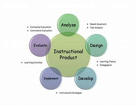

| Notions | Dèfinitions | Image |
| Framework | En programmation informatique, un framework (appelé aussi infrastructure logicielle, infrastructure de développement, environnement de développement, socle d'applications4, cadre d'applications4 ou cadriciel) est un ensemble cohérent de composants logiciels structurels qui sert à créer les fondations ainsi que les grandes lignes de tout ou partie d'un logiciel, c'est-à-dire une architecture. |  |
| HTML | Le HyperText Markup Language, généralement abrégé HTML ou, dans sa dernière version, HTML5, est le langage de balisage conçu pour représenter les pages web. |  |
| java | Java est un langage de programmation de haut niveau orienté objet créé par James Gosling et Patrick Naughton, employés de Sun Microsystems |  |
| SQL | SQL (sigle pour Structured Query Language, « langage de requêtes structurées ») est un langage informatique normalisé servant à exploiter des bases de données relationnelles. |  |